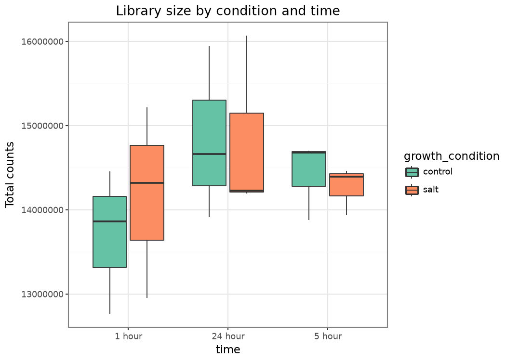
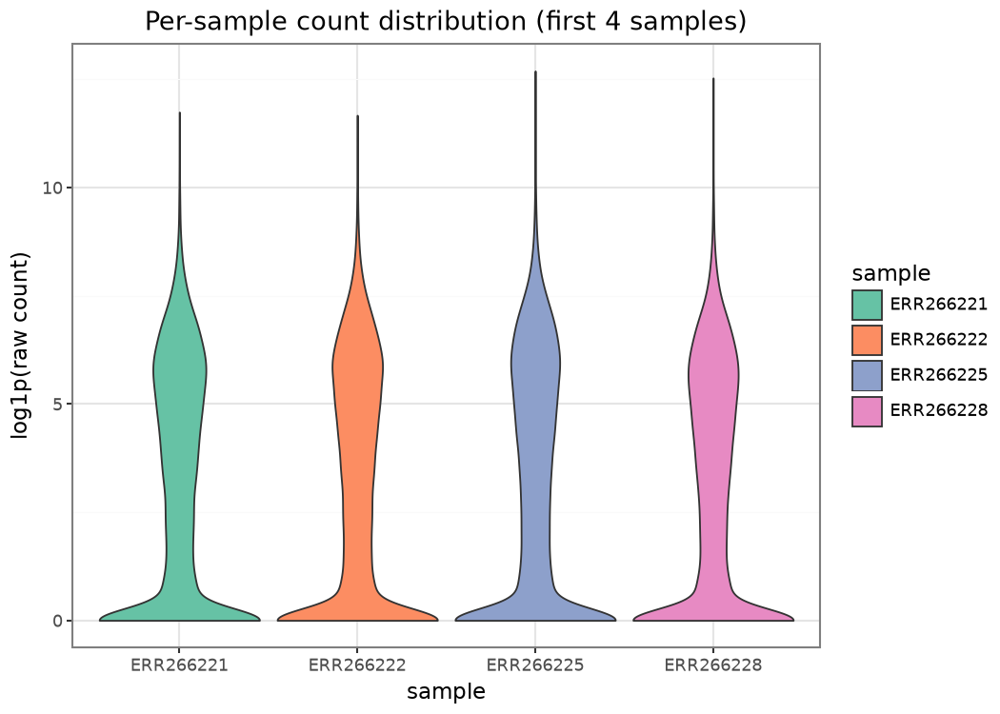
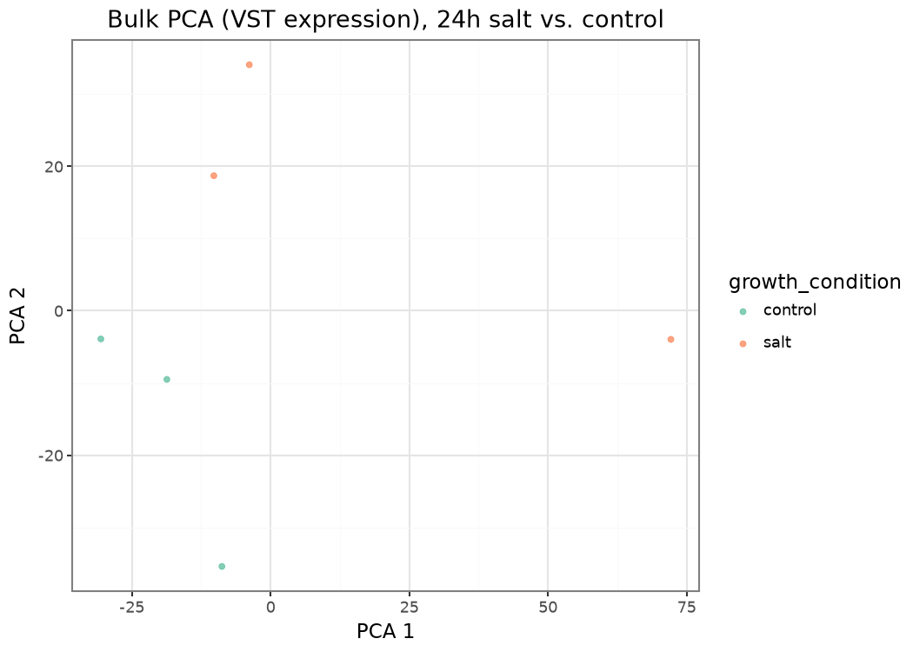
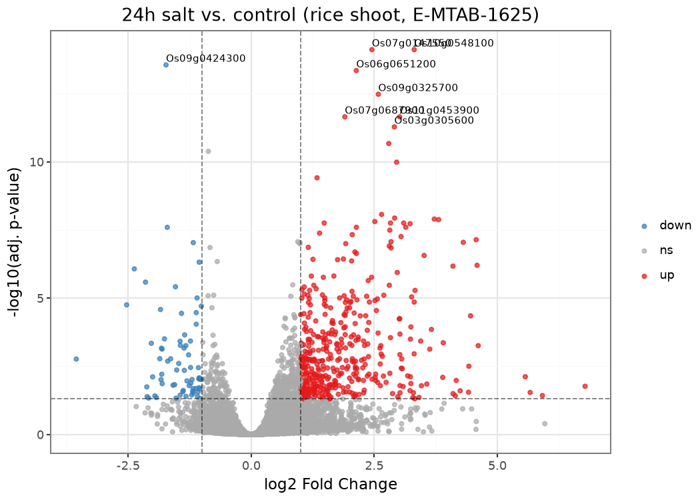
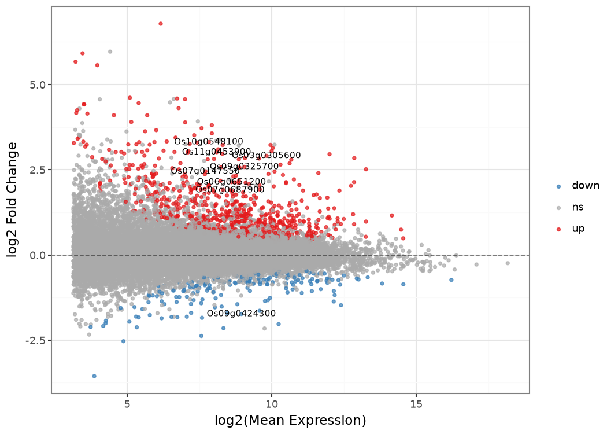
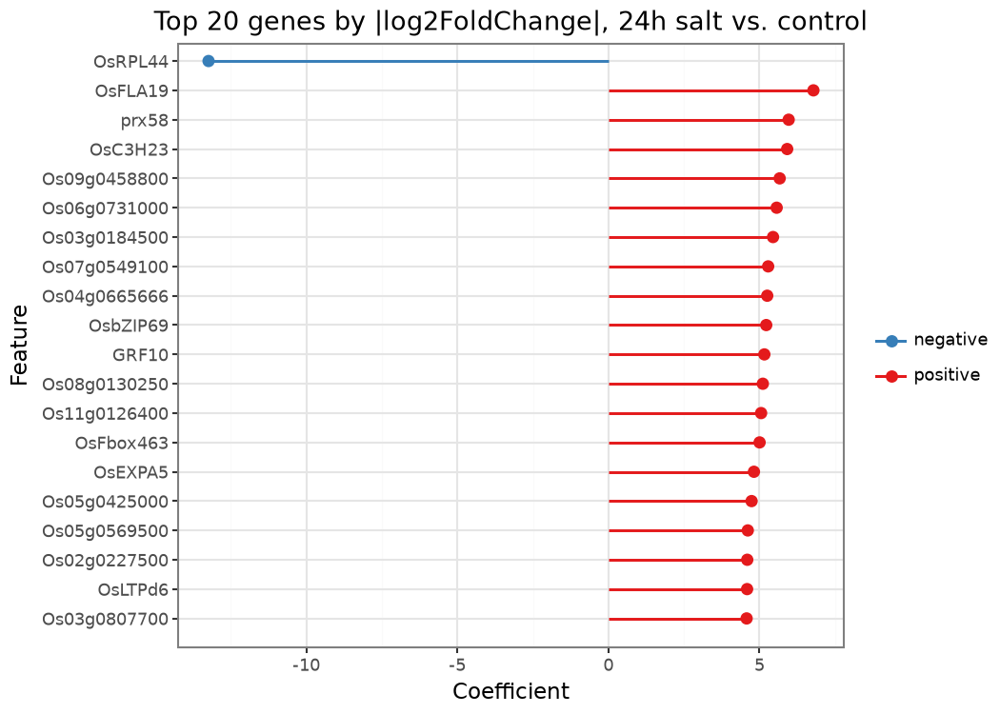
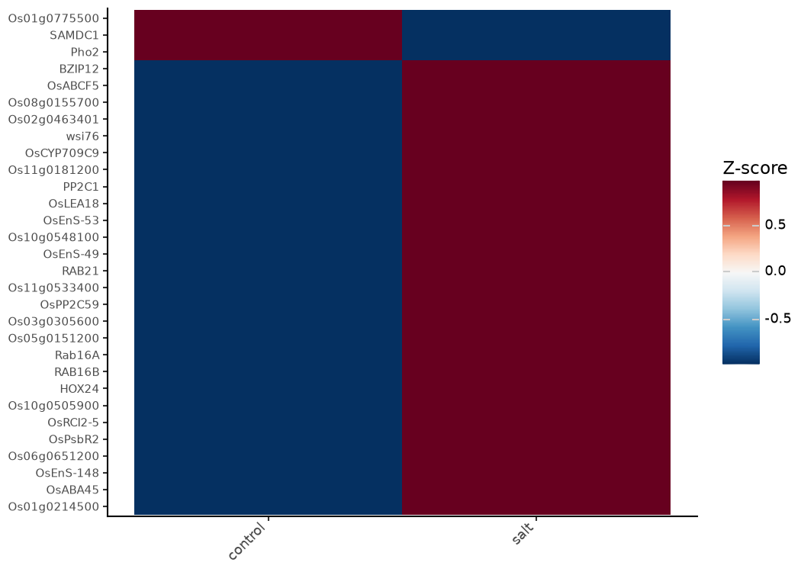
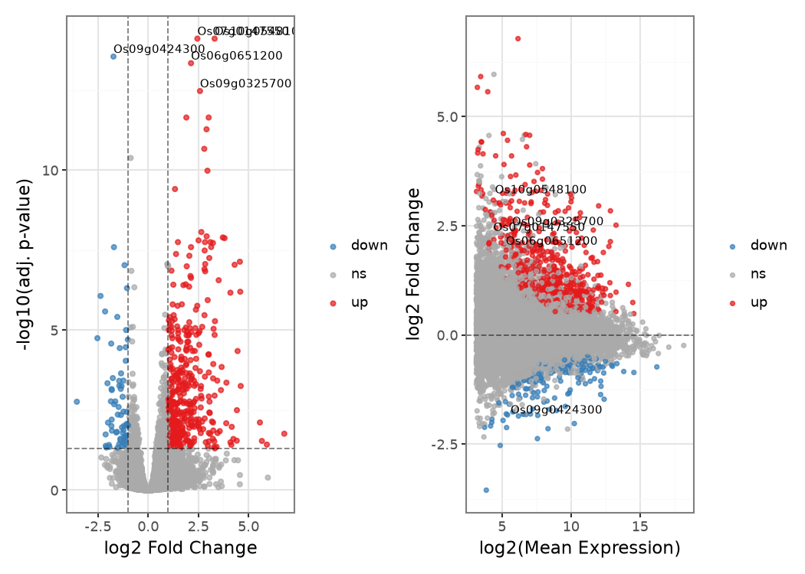

import sys, pathlib
sys.path.insert(0, str(pathlib.Path("_includes").resolve()))
from setup import configure_warnings, ensure_matplotlib_initialized
ensure_matplotlib_initialized() # see the import-order note in _includes/setup.py
configure_warnings()
import numpy as np
import pandas as pd
import ggnomics as gg
from plotnine import theme_bw, theme, labs, element_textBulk RNA-seq differential expression
PyDESeq2 analysis of rice salt stress (E-MTAB-1625)
Here we analyse the transcriptional response of rice seedlings to salt stress. Counts and sample annotations come from Expression Atlas experiment E-MTAB-1625; PyDESeq2 provides the differential-expression model, while ggnomics is used for quality control, PCA, and results visualization.
1. Study and design
- Accession: E-MTAB-1625 (EMBL-EBI Expression Atlas, via
pyexpressionatlas) - Organism: Oryza sativa Japonica Group (rice)
- Biological question: transcriptional response of 2-week-old rice seedlings to 300 mM NaCl salt stress, sampled at 1, 5, and 24 hours
- Data used here: 38,866 genes x 18 shoot samples with raw integer counts
- Count assay:
"counts"(raw), genes x samples orientation - Metadata fields used:
growth condition(2 levels),time(3 levels)
2. Loading and inspecting the experiment
from data import load_emtab1625
se = load_emtab1625()
se.shapePackage 'multiassayexperiment' is not installed.(38866, 18)se.get_assay_names()['counts']cd = se.get_column_data().to_pandas()
cd[["growth condition", "time"]]| growth condition | time | |
|---|---|---|
| ERR266228 | normal watering | 1 hour |
| ERR266222 | normal watering | 5 hour |
| ERR266221 | 300 millimolar sodium chloride | 5 hour |
| ERR266225 | normal watering | 24 hour |
| ERR266234 | normal watering | 24 hour |
| ERR266238 | 300 millimolar sodium chloride | 24 hour |
| ERR266237 | 300 millimolar sodium chloride | 1 hour |
| ERR266235 | 300 millimolar sodium chloride | 1 hour |
| ERR266227 | 300 millimolar sodium chloride | 5 hour |
| ERR266231 | 300 millimolar sodium chloride | 24 hour |
| ERR266232 | normal watering | 24 hour |
| ERR266236 | 300 millimolar sodium chloride | 1 hour |
| ERR266230 | normal watering | 1 hour |
| ERR266226 | 300 millimolar sodium chloride | 24 hour |
| ERR266229 | normal watering | 5 hour |
| ERR266224 | 300 millimolar sodium chloride | 5 hour |
| ERR266223 | normal watering | 5 hour |
| ERR266233 | normal watering | 1 hour |
The cross-tabulation confirms a balanced 2 x 3 design with three replicates for each condition and time point:
pd.crosstab(cd["growth condition"], cd["time"])| time | 1 hour | 24 hour | 5 hour |
|---|---|---|---|
| growth condition | |||
| 300 millimolar sodium chloride | 3 | 3 | 3 |
| normal watering | 3 | 3 | 3 |
3. Library size and count-distribution QC
counts_raw = np.asarray(se.get_assay("counts"))
lib_sizes = pd.DataFrame({
"sample": se.get_column_names(),
"library_size": counts_raw.sum(axis=0),
"growth_condition": cd["growth condition"].map({
"300 millimolar sodium chloride": "salt", "normal watering": "control",
}).to_numpy(),
"time": cd["time"].to_numpy(),
})
gg.plot_coldata(lib_sizes, x="time", y="library_size", color_by="growth_condition", shape="box") + theme_bw() + labs(title="Library size by condition and time", y="Total counts")
gene_names = se.get_row_names()
log_counts_long = pd.DataFrame(
np.log1p(counts_raw[:, :4]), columns=se.get_column_names()[:4]
).melt(var_name="sample", value_name="log1p_count")
gg.plot_coldata(log_counts_long, x="sample", y="log1p_count", shape="violin") + theme_bw() + labs(title="Per-sample count distribution (first 4 samples)", y="log1p(raw count)")
4. Selecting an estimable, replicated contrast
All three time points support a matched salt-versus-control comparison. We use the 24-hour samples to examine the sustained response: three salt-treated and three control samples, with design = ~growth_condition, reference level "control", and contrast ["growth_condition", "salt", "control"].
sel_cd = cd.copy()
sel_cd["growth_condition"] = sel_cd["growth condition"].map({
"300 millimolar sodium chloride": "salt", "normal watering": "control",
})
sel_cd["time"] = sel_cd["time"].str.replace(" ", "_")
sub_cd = sel_cd.loc[sel_cd["time"] == "24_hour"]
sub_cd[["growth_condition"]]| growth_condition | |
|---|---|
| ERR266225 | control |
| ERR266234 | control |
| ERR266238 | salt |
| ERR266231 | salt |
| ERR266232 | control |
| ERR266226 | salt |
5. Fitting PyDESeq2 on raw integer counts
from pydeseq2.dds import DeseqDataSet
from pydeseq2.ds import DeseqStats
counts_df = pd.DataFrame(counts_raw, index=gene_names, columns=se.get_column_names()).T
counts_df = counts_df.loc[sub_cd.index].round().astype(int) # raw integer counts, gene-by-sample transposed to sample-by-gene
metadata = sub_cd[["growth_condition"]].copy()
metadata["growth_condition"] = pd.Categorical(metadata["growth_condition"], categories=["control", "salt"])
dds = DeseqDataSet(counts=counts_df, metadata=metadata, design="~growth_condition", refit_cooks=True, quiet=True)
dds.deseq2()ds = DeseqStats(dds, contrast=["growth_condition", "salt", "control"], alpha=0.05, quiet=True)
ds.summary()
results = ds.results_df
results.shape(38866, 6)(results["padj"] < 0.05).sum()np.int64(832)6. Variance-stabilizing transformation — for visualization only
The Wald test above uses the raw counts together with DESeq2’s size-factor and dispersion model. Variance-stabilized values are calculated separately for PCA and heatmaps, where reducing the dependence of variance on the mean makes sample structure easier to visualize:
dds.vst_fit()
vst = pd.DataFrame(dds.vst_transform(), index=counts_df.index, columns=counts_df.columns)
vst.iloc[:, :5].head()| ENSRNA049440515 | ENSRNA049440716 | ENSRNA049441102 | ENSRNA049441259 | ENSRNA049441339 | |
|---|---|---|---|---|---|
| ERR266225 | 4.490715 | 4.490715 | 4.490715 | 4.490715 | 4.490715 |
| ERR266234 | 4.490715 | 4.490715 | 4.490715 | 4.490715 | 4.490715 |
| ERR266238 | 4.490715 | 4.490715 | 4.789900 | 4.490715 | 4.490715 |
| ERR266231 | 4.490715 | 4.490715 | 4.490715 | 4.490715 | 4.490715 |
| ERR266232 | 4.490715 | 4.490715 | 4.490715 | 4.490715 | 4.490715 |
The helper run_deseq2_on_emtab1625() caches the fitted model and transformed expression matrix so they can be reused by the other examples:
from data import run_deseq2_on_emtab1625
fit = run_deseq2_on_emtab1625()
results, vst, metadata = fit["results"], fit["vst"], fit["metadata"]7. PCA on the VST-transformed expression
ggnomics.bulk_pca computes PCA from an assay in a SummarizedExperiment. In contrast, the top-level ggnomics.plot_pca visualizes coordinates that have already been computed. The single-cell counterpart is shown in the scranpy workflow.
from summarizedexperiment import SummarizedExperiment
vst_se = SummarizedExperiment(
assays={"vst": vst.T.to_numpy()}, # genes x samples
row_data=pd.DataFrame(index=vst.columns),
column_data=metadata,
)
gg.bulk_pca.plot_pca(vst_se, assay_name="vst", color="growth_condition", n_components=5) + theme_bw() + labs(title="Bulk PCA (VST expression), 24h salt vs. control")
8. Volcano and MA plots
gg.plot_volcano(results, label_top_n=8) + theme_bw() + labs(title="24h salt vs. control (rice shoot, E-MTAB-1625)")
gg.plot_ma(results, label_top_n=8) + theme_bw()
9. Coefficient (lollipop) plot
plot_coef_lollipop can rank and display the per-gene log2FoldChange coefficients returned by PyDESeq2:
top_genes = results.reindex(results["log2FoldChange"].abs().sort_values(ascending=False).index).head(20)
coefs = top_genes[["log2FoldChange"]].rename(columns={"log2FoldChange": "coefficient"})
gene_label_map = fit["gene_names"]
coefs.index = [gene_label_map.get(g) or g for g in coefs.index]
gg.plot_coef_lollipop(coefs, top_n=20) + theme_bw() + labs(title="Top 20 genes by |log2FoldChange|, 24h salt vs. control")
10. Heatmap of top differentially expressed genes
sig_top = results.loc[results["padj"] < 0.05].sort_values("padj").head(30)
heat_df = vst[sig_top.index].copy()
heat_df.columns = [gene_label_map.get(g) or g for g in heat_df.columns]
heat_df["growth_condition"] = metadata["growth_condition"].to_numpy()
gg.plot_heatmap(
heat_df, features=list(heat_df.columns[:-1]), group_by="growth_condition",
cluster_rows=True, cluster_cols=True,
) + theme(axis_text_x=element_text(rotation=45, hjust=1))
11. Extending the returned objects
The volcano and MA plots can be combined directly with plotnine’s composition operators:
volcano = gg.plot_volcano(results, label_top_n=5) + theme_bw()
ma = gg.plot_ma(results, label_top_n=5) + theme_bw()
volcano | ma
Next
- UpSet plots compares the significant/top-ranked DE genes across the three E-MTAB-1625 timepoints (1, 5, and 24 hours) fitted here.
- Specialized plots uses the cached fit for additional volcano, MA, lollipop, and heatmap examples.
- Single-cell analysis with scranpy for the single-cell analogue of this workflow.